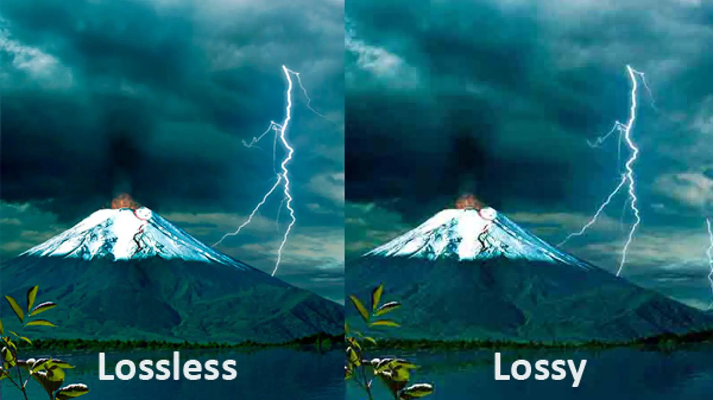

Wat is compressie?
Een compressie is een manier om bestanden kleiner te maken. Het voordeel hiervan is dat dat er grote bestanden kunnen worden gedownload zonder dat het veel ruimte en beslag inneemt. Hierdoor kunnen bestanden ook veel sneller worden gedownload. Er zijn twee soorten bestandscompressies: lossy en lossless compressie.
Wat is Lossy compressie?
Zodra er een afbeelding of een video wordt gedownload of opgeslagen dan hebben we te maken met Lossy compressie. Lossy compressie zorgt ervoor dat de informatie van het orginale bestand wordt verwijderd zodat de omvang van het bestand kleiner wordt. Veel gebruikte compressie-methode die bij afbeeldingen wordt gebruikt is JPEG ookwel JPG genoemd. JPEG staat voor een bestandsformaat voor het opslaan van bitafbeeldingen in een digitale vorm. Bij de lossy compressie is het onmogelijk om het orginele bestand weer terug te halen, omdat er informatie is verwijderd. Op de computer kan je zelf ervoor kiezen om Lossy compressie te gebruiken, maar jouw telefoon past dat automatisch toe bij gemaakte foto's. Hierbij wordt dus de kwaliteit van de afbeelding of video beinvloedt.
Wat is Lossless compressie?
Bij Lossless compressie is het zo dat de informatie van de gedownloade of opgeslagen, video of afbeelding, niet wordt veranderd. Hierbij wordt de informatie dus niet verwijderd en dus zal de orginale kwaliteit niet worden beinvloedt. Het gebruik van de Lossless compressie wordt vooral gebruikt bij kleinere bestanden. Bij de lossless compressie is het wel mogelijk om het orginele bestand weer terug te halen. Zodra er een gemaakte foto wordt verstuurd is het meestal zo dat de ontvanger van de foto, de foto waziger ontvang dan dat die daadwerklijk is. Dit komt doordat de compressie op jou apparaat is toegepast en niet op die van de ontvanger.
Compressie bij geluidsfragmenten
De compressie bij geluidsfragmenten is anders dan die bij video's of afbeeldingen. Een van de meest bekendste compressie-methode voor muziek is MP3. MP3 is een Lossy compressie en zorgt ervoor dat er informatie wordt verwijderd van de muziek zonder dat wij dit door heben. Hierdoor kunnen de muziek makkelijk worden opgeslagen zonder dat er veel opslag en ruimte wordt verbruikt. Bij het comprimeren met MP3 worden de tonen die hoger zijn dan 16kHZ verwijderd. Sample rate bij muziek is erg belangrijk. Sample rate houdt in dat van een digitaal signaal wordt vergelijken hoeveel pixels in het geluidsfragment zitten. Hierbij is het belangrijk dat het aantal bites ook wordt opgeslagen. Sample rate vermenigvuldigd met het aantal bites zorgt voor bitrate van de muziek. Bitrate is de de snelheid van informatieoverdrachten. Dit zorgt ervoor dat er veel geluidsfragmenten kunnen worden opgeslagen zonder dat dit te veel opslag of ruimte inneemt.